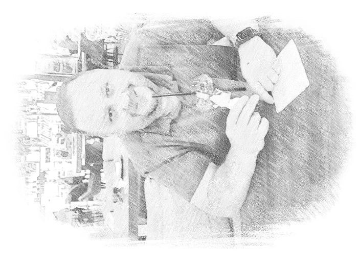

Дмитрий Кузьминов
IT Engineer
Инженер IT с большим практическим опытом сопровождения,
администрирования и эксплуатации прикладных автоматизированных систем
в крупных финансовых организациях. Специализируюсь на обеспечении
стабильной работы критически важных сервисов, анализе и устранении
инцидентов, внедрении и обновлении программного обеспечения,
взаимодействии с разработчиками и бизнес‑подразделениями.
Текущая позиция
Сбербанк — Главный инженер
Сопровождение и администрирование прикладных автоматизированных систем,
работа с тестовыми и промышленными ландшафтами, мониторинг и устранение
инцидентов, участие в развитии и эксплуатации высоконагруженных ИТ‑сервисов,
подготовка эксплуатационной и инструктивной документации.
Контакты
📧 Email:
dimandv@ya.ru
📱 Телефон / мессенджеры: +7 (903) 540‑35‑54 (Gem Space, VK)
💬 Telegram:
@Sokol_dv
📍 Москва
Dmitry Kuzminov
IT Engineer
IT engineer with strong hands‑on experience in supporting,
administering and operating application systems in large
financial organizations. Focused on reliability of critical
services, incident analysis and resolution, software deployment
and close collaboration with development and business teams.
Current role
Sberbank — Principal Engineer
Operation and support of application systems, monitoring and incident
handling, participation in system evolution and operational documentation.